We would want a visualization of the rating variable capture the amount of peaks with each rating.
We would want a visualization of the quantitative elevation variable to contain the spread of elevations, center of elevations, and number of each elevation.
Exercise 2
Imported tidyverse at the top
Exercise 3
# Use the ggplot functionggplot(hikes, aes(x = rating))
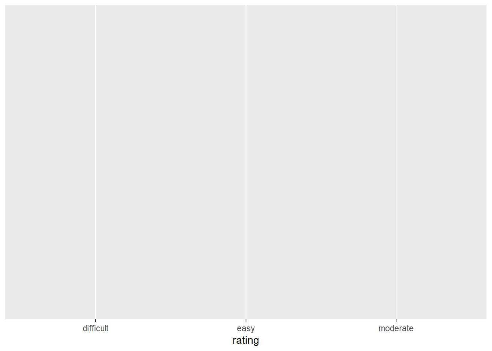
It created an empty space with lavels for each rating, but did not populate the data.
The data set the data is coming from
x = ratings defines the x axis as being the rating of the peak
asthetic
Exercise 4
# COMMENT on the change in the code and the corresponding change in the plotggplot(hikes, aes(x = rating)) +geom_bar()
# Added bars, making a bar chart
# COMMENT on the change in the code and the corresponding change in the plotggplot(hikes, aes(x = rating)) +geom_bar() +labs(x ="Rating", y ="Number of hikes")
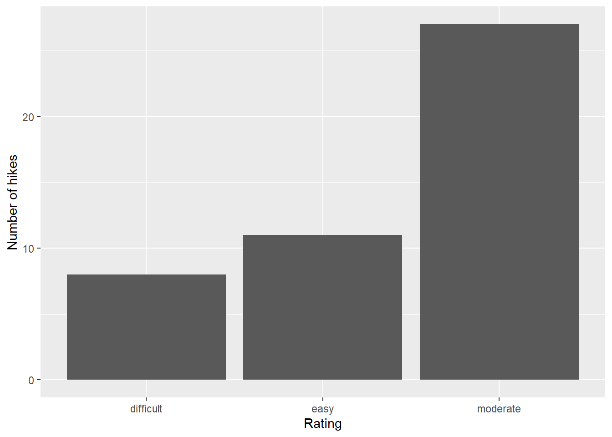
# Added labels to the x and y axis of the chart that are more accurate to what we are looking at
# COMMENT on the change in the code and the corresponding change in the plotggplot(hikes, aes(x = rating)) +geom_bar(fill ="blue") +labs(x ="Rating", y ="Number of hikes")
# Made the bars blue
# COMMENT on the change in the code and the corresponding change in the plotggplot(hikes, aes(x = rating)) +geom_bar(color ="orange", fill ="blue") +labs(x ="Rating", y ="Number of hikes")
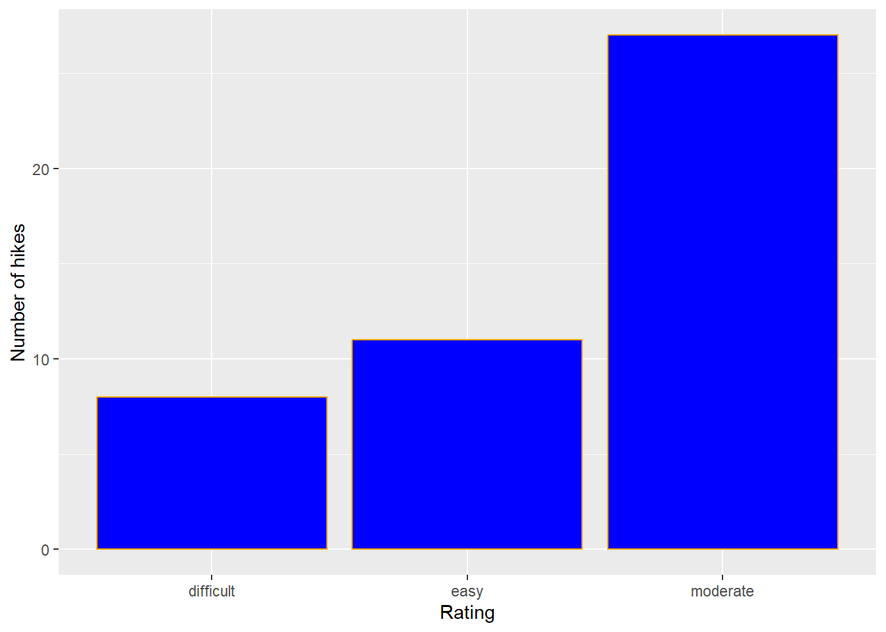
# Added a border on each bar
# COMMENT on the change in the code and the corresponding change in the plotggplot(hikes, aes(x = rating)) +geom_bar(color ="orange", fill ="blue") +labs(x ="Rating", y ="Number of hikes") +theme_minimal()
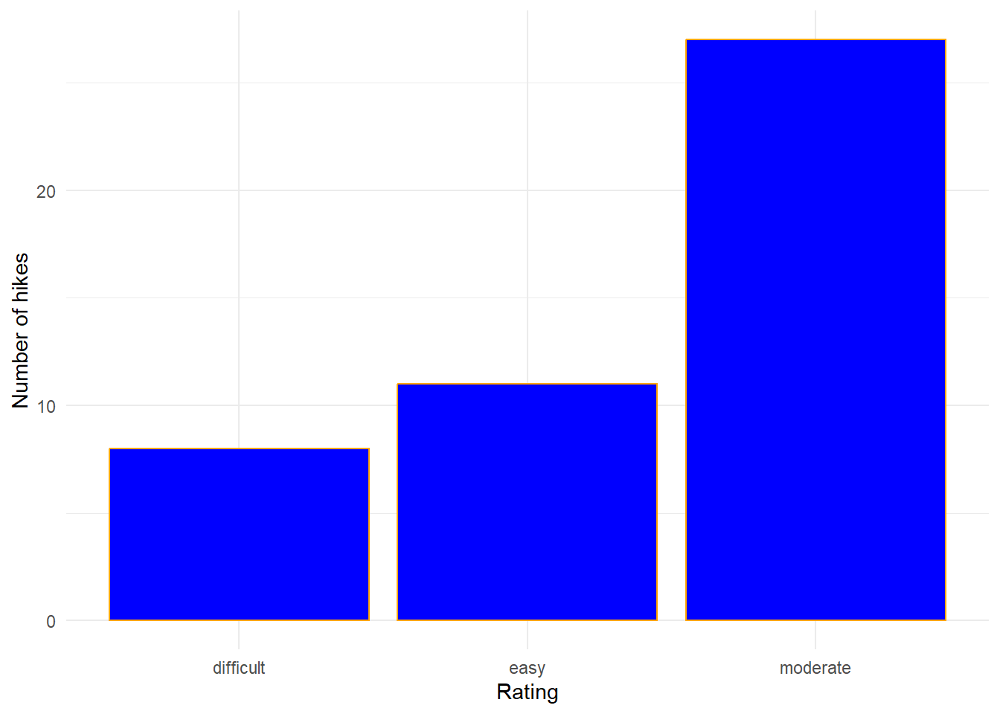
#Changed the theme of the space the bar chart is in. Made the background white as opposed to light gray
Exercise 5
Part a
The ‘+’ is used to differentiate between different parts of the ggplot code. Each + is at the end of a line, and tells the code that there is another line of code to look for
My assumption is that ‘geom’ stands for geometry, and ‘geam_bar’ is telling ggplot to add a bar plot’s geometry
‘labs’ likely stands for labels
‘color’ sets the border color of the bar where as ‘fill’ fills the bar with a color
Part b
Observed Categories: Rating Difficult Easy Moderate Variability between categories: Some categories do appear to be more common than others. For example, moderate has nearly triple the amount of observations as difficult
We learned that the ratings of the peaks are not evenly distributed. It appears that moderate ratings are most common, followed distantly by easy, with difficult being close behind easy.
Part c
I would like to be able to order the x axis. It doesnt really make sense foing from difficult -> easy -> moderate
Exercise 6
ggplot(hikes, aes(x = elevation)) +geom_bar()
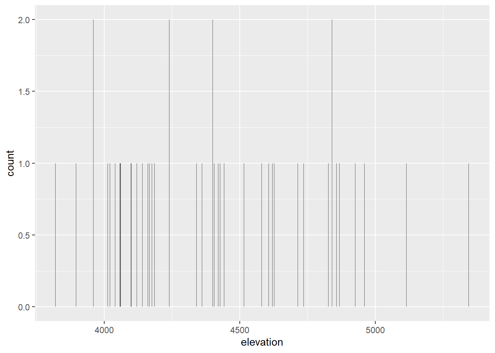
Bar charts are noteffective visualizations for quantitative data because it displays each data point as a seperate instance.
Exercise 7
Part a
6 hikes have a height between 4500 and 4700 feet
2 hikes have a height greater than 5100 feet
Part b
The center of the histogram appears to be around 4100 to 4300 feet. Any value from 3900 to 4900 feet appears typical, but hikes at heights less than 3900 feet and greater than 4900 feet do appear to be common enough to not be considered outliers
The height of each of the hikes has a spread of 1300 feet from 3700 feet to 5500 feet
The values appear distributed with a slightly right skewed
There does not appear to be any outcomes that are unusually large or small
`stat_bin()` using `bins = 30`. Pick better value with `binwidth`.
Exercise 9
# COMMENT on the change in the code and the corresponding change in the plotggplot(hikes, aes(x = elevation)) +geom_histogram()
`stat_bin()` using `bins = 30`. Pick better value with `binwidth`.
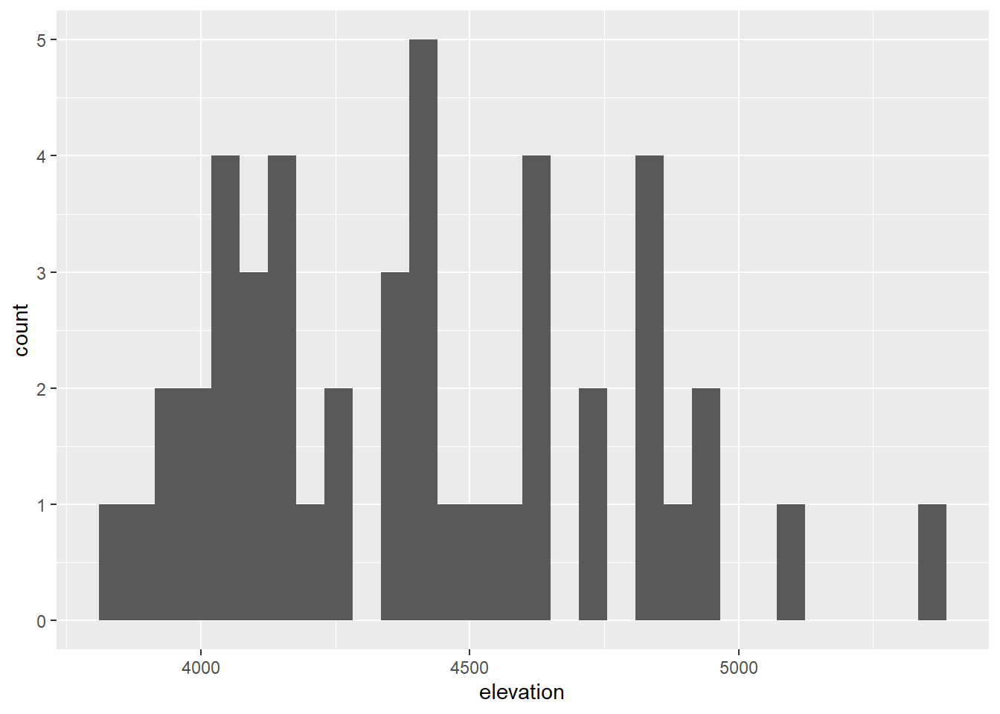
#adds histogram
# COMMENT on the change in the code and the corresponding change in the plotggplot(hikes, aes(x = elevation)) +geom_histogram(color ="white")
`stat_bin()` using `bins = 30`. Pick better value with `binwidth`.
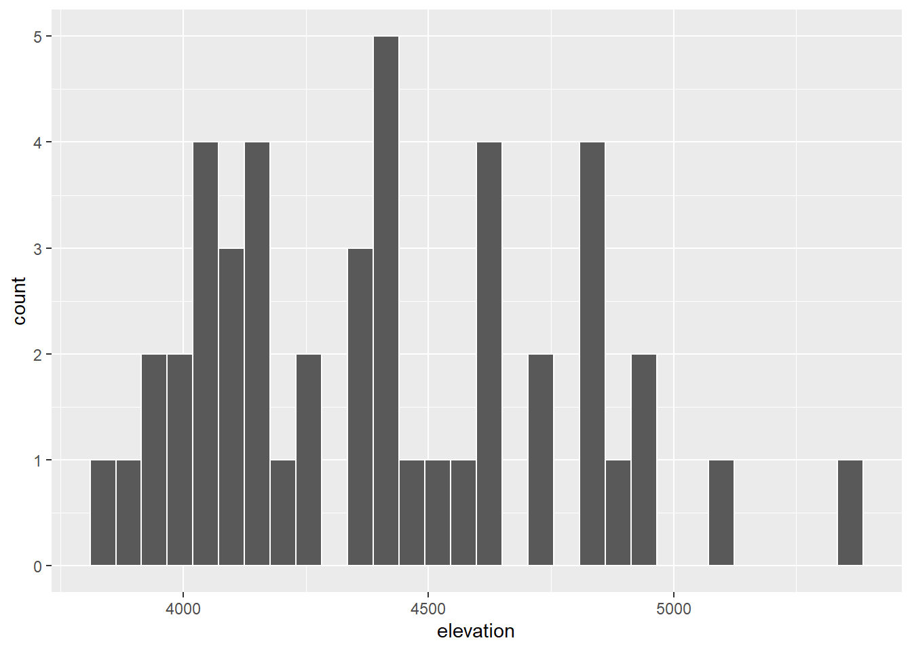
#gives each range of values in the histogram a white border
# COMMENT on the change in the code and the corresponding change in the plotggplot(hikes, aes(x = elevation)) +geom_histogram(color ="white", fill ="blue")
`stat_bin()` using `bins = 30`. Pick better value with `binwidth`.
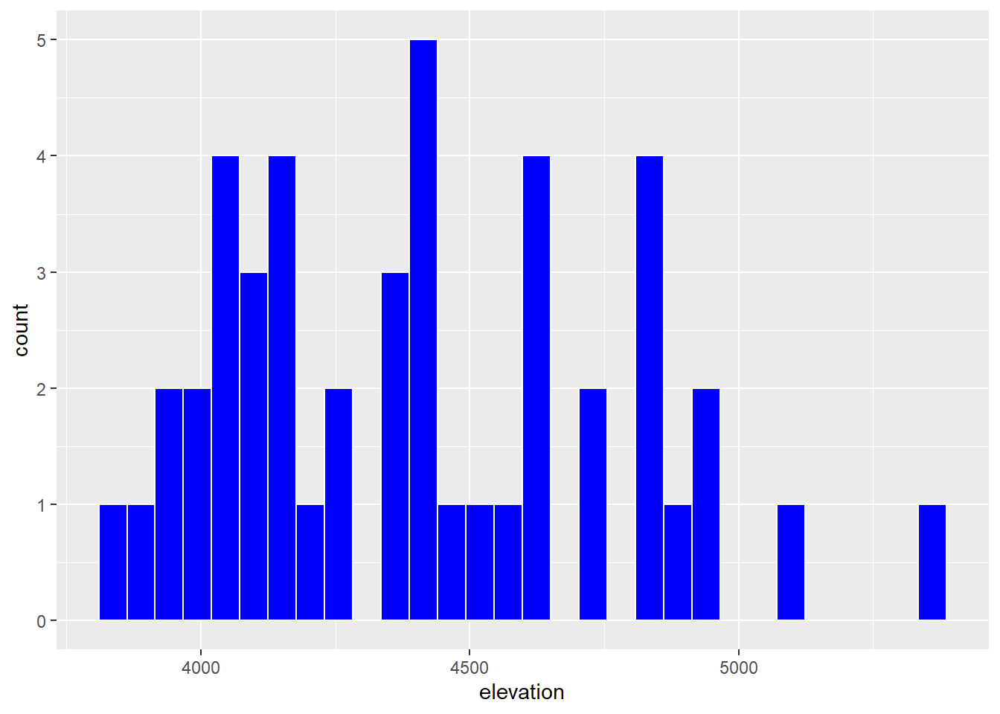
#adds a blue fill to each range of elevation
# COMMENT on the change in the code and the corresponding change in the plotggplot(hikes, aes(x = elevation)) +geom_histogram(color ="white") +labs(x ="Elevation (feet)", y ="Number of hikes")
`stat_bin()` using `bins = 30`. Pick better value with `binwidth`.
#Adds labels to the x and y axis while removing the blue fill
# COMMENT on the change in the code and the corresponding change in the plotggplot(hikes, aes(x = elevation)) +geom_histogram(color ="white", binwidth =1000) +labs(x ="Elevation (feet)", y ="Number of hikes")
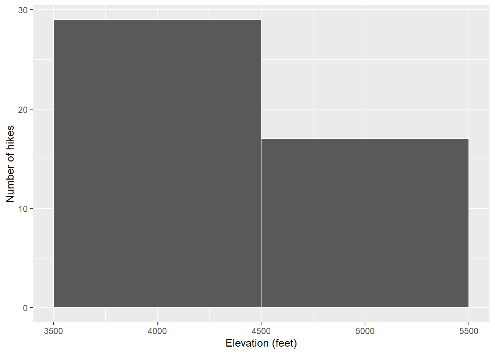
#changes the width of the histogram's bins to 1000
# COMMENT on the change in the code and the corresponding change in the plotggplot(hikes, aes(x = elevation)) +geom_histogram(color ="white", binwidth =5) +labs(x ="Elevation (feet)", y ="Number of hikes")
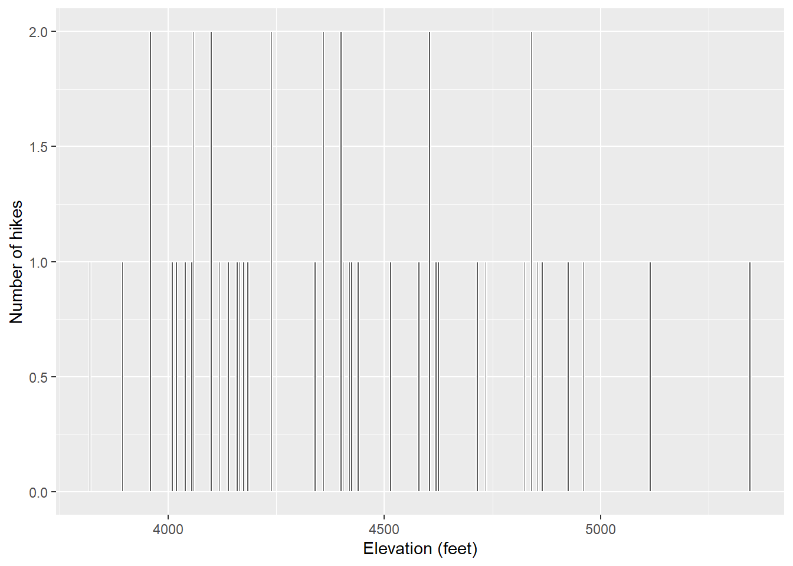
#Changes the width of the histogram's bins to 5. This looks pretty close to how the bar chart of this looked
# COMMENT on the change in the code and the corresponding change in the plotggplot(hikes, aes(x = elevation)) +geom_histogram(color ="white", binwidth =200) +labs(x ="Elevation (feet)", y ="Number of hikes")
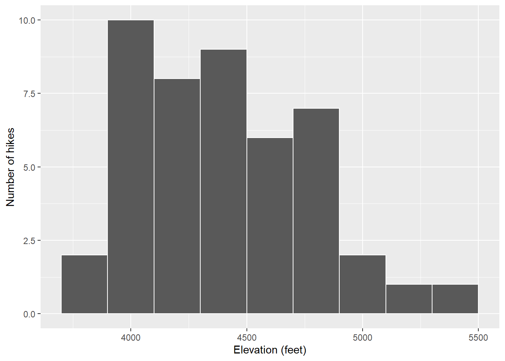
#changes the bin widths to 200. This appears the same as the histogram we looked at in an earlier exercise
Exercise 10
geom_histogram()
Color adds a border to each bin where as fill adds a fill color to each bin
adding ‘color = “white”’ improves the visualization as it makes it much more readable with the spaces between bins
binwidth changes how wide the range in elevation each bin contains
the histogram becomes ineffective because it becomes impossible to assertain meaningful information about the data. We become unable to effectively see the center, and the large bins mean that the true spread also becomes difficult to see
the histogram becomes ineffective because the small bins make the histogram unreadable. it is hard to assertain the center because there are too many small data points
Exercise 11
ggplot(hikes, aes(x = elevation)) +geom_density()
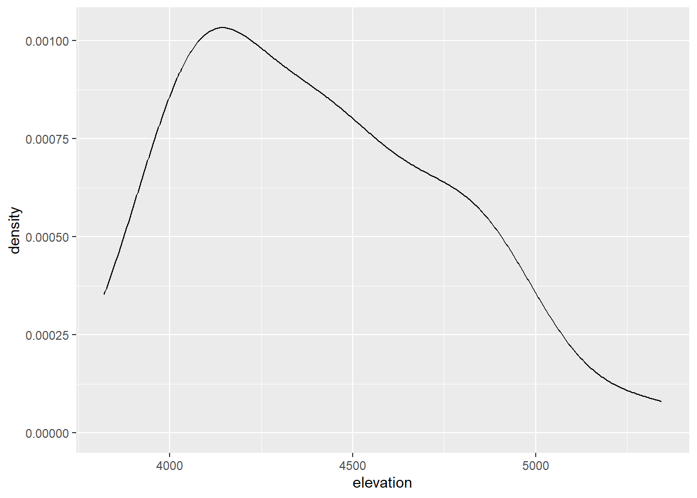
geom_density(color = “blue”)
changes the line to be blue
geom_density(fill = “orange”)
changes the area below the line to be orange
ggplot(hikes, aes(x = elevation)) +geom_density(color ="blue", fill ="orange")
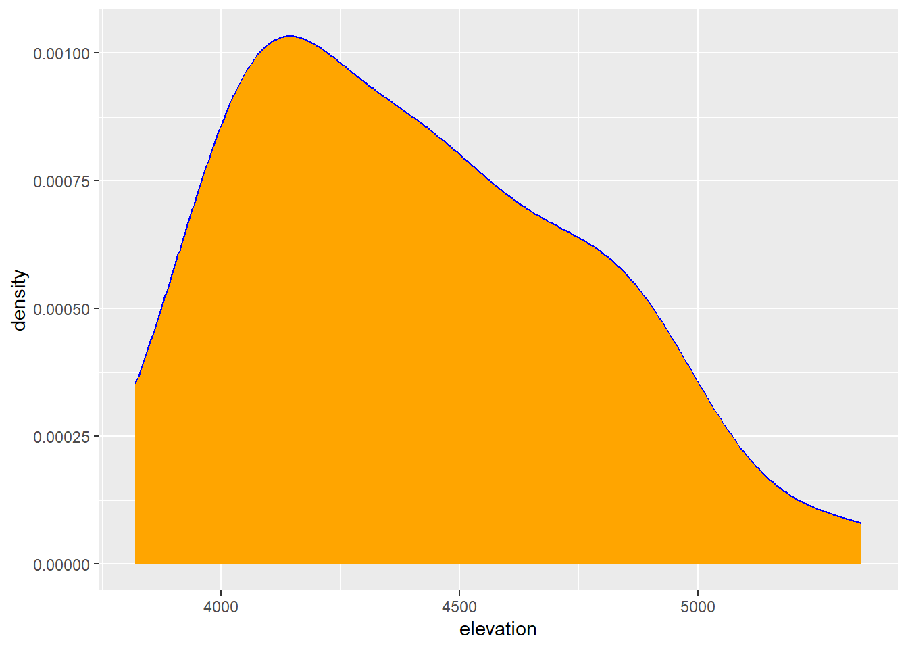
I was correct
The density plot appears similar to the histogram, but makes it easier to see the shape of the data
Exercise 12
Histogram Easy to see the center Easy to see the spread
Density Easy to see the center Easy to see the shape
Exercise 13
Adding indentations makes the code more readable
it makes the code readable
Exercise 14
# Data on students in this classsurvey <-read.csv("https://hash-mac.github.io/stat112site-s25/data/survey.csv")# World Cup dataworld_cup <-read.csv("https://raw.githubusercontent.com/rfordatascience/tidytuesday/master/data/2022/2022-11-29/worldcups.csv")head(survey)
cafe_mac minutes_to_campus fav_temp_c hangout
1 mashed potatoes 5 26 the mountains
2 is tasty 5 28 a city
3 burger 5 19 a forest
4 caesar salad 12 18 a forest
5 ice cream 0 24 the mountains
6 tofu 10 -10 the mountains
head(world_cup)
year host winner second third fourth
1 1930 Uruguay Uruguay Argentina USA Yugoslavia
2 1934 Italy Italy Czechoslovakia Germany Austria
3 1938 France Italy Hungary Brazil Sweden
4 1950 Brazil Uruguay Brazil Sweden Spain
5 1954 Switzerland West Germany Hungary Austria Uruguay
6 1958 Sweden Brazil Sweden France West Germany
goals_scored teams games attendance
1 70 13 18 434000
2 70 16 17 395000
3 84 15 18 483000
4 88 13 22 1337000
5 140 16 26 943000
6 126 16 35 868000
---title: "Univariate Viz"---Use this file for practice with the **univariate viz** in-class activity. Refer to the class website for details.- **Import Data**```{r}# Import datahikes <-read.csv("https://mac-stat.github.io/data/high_peaks.csv")# Load packageslibrary(tidyverse)```- **Exercise 1**```{r}head(hikes)```> We would want a visualization of the rating variable capture the amount of peaks with each rating. > We would want a visualization of the quantitative elevation variable to contain the spread of elevations, center of elevations, and number of each elevation.- **Exercise 2**>Imported tidyverse at the top- **Exercise 3**```{r}# Use the ggplot functionggplot(hikes, aes(x = rating))```> It created an empty space with lavels for each rating, but did not populate the data.> The data set the data is coming from> x = ratings defines the x axis as being the rating of the peak> asthetic- Exercise 4```{r}# COMMENT on the change in the code and the corresponding change in the plotggplot(hikes, aes(x = rating)) +geom_bar()# Added bars, making a bar chart``````{r}# COMMENT on the change in the code and the corresponding change in the plotggplot(hikes, aes(x = rating)) +geom_bar() +labs(x ="Rating", y ="Number of hikes")# Added labels to the x and y axis of the chart that are more accurate to what we are looking at``````{r}# COMMENT on the change in the code and the corresponding change in the plotggplot(hikes, aes(x = rating)) +geom_bar(fill ="blue") +labs(x ="Rating", y ="Number of hikes")# Made the bars blue``````{r}# COMMENT on the change in the code and the corresponding change in the plotggplot(hikes, aes(x = rating)) +geom_bar(color ="orange", fill ="blue") +labs(x ="Rating", y ="Number of hikes")# Added a border on each bar``````{r}# COMMENT on the change in the code and the corresponding change in the plotggplot(hikes, aes(x = rating)) +geom_bar(color ="orange", fill ="blue") +labs(x ="Rating", y ="Number of hikes") +theme_minimal()#Changed the theme of the space the bar chart is in. Made the background white as opposed to light gray```- **Exercise 5**> Part aThe '+' is used to differentiate between different parts of the ggplot code. Each + is at the end of a line, and tells the code that there is another line of code to look forMy assumption is that 'geom' stands for geometry, and 'geam_bar' is telling ggplot to add a bar plot's geometry'labs' likely stands for labels'color' sets the border color of the bar where as 'fill' fills the bar with a color> Part bObserved Categories: Rating Difficult Easy ModerateVariability between categories: Some categories do appear to be more common than others. For example, moderate has nearly triple the amount of observations as difficultWe learned that the ratings of the peaks are not evenly distributed. It appears that moderate ratings are most common, followed distantly by easy, with difficult being close behind easy. > Part cI would like to be able to order the x axis. It doesnt really make sense foing from difficult -> easy -> moderate- **Exercise 6**```{r}ggplot(hikes, aes(x = elevation)) +geom_bar()```Bar charts are noteffective visualizations for quantitative data because it displays each data point as a seperate instance.- **Exercise 7**> Part a6 hikes have a height between 4500 and 4700 feet2 hikes have a height greater than 5100 feet> Part bThe center of the histogram appears to be around 4100 to 4300 feet. Any value from 3900 to 4900 feet appears typical, but hikes at heights less than 3900 feet and greater than 4900 feet do appear to be common enough to not be considered outliersThe height of each of the hikes has a spread of 1300 feet from 3700 feet to 5500 feetThe values appear distributed with a slightly right skewedThere does not appear to be any outcomes that are unusually large or small- **Exercise 8**```{r}ggplot(hikes, aes(x = elevation)) +geom_histogram()```- **Exercise 9**```{r}# COMMENT on the change in the code and the corresponding change in the plotggplot(hikes, aes(x = elevation)) +geom_histogram()#adds histogram``````{r}# COMMENT on the change in the code and the corresponding change in the plotggplot(hikes, aes(x = elevation)) +geom_histogram(color ="white") #gives each range of values in the histogram a white border``````{r}# COMMENT on the change in the code and the corresponding change in the plotggplot(hikes, aes(x = elevation)) +geom_histogram(color ="white", fill ="blue") #adds a blue fill to each range of elevation``````{r}# COMMENT on the change in the code and the corresponding change in the plotggplot(hikes, aes(x = elevation)) +geom_histogram(color ="white") +labs(x ="Elevation (feet)", y ="Number of hikes")#Adds labels to the x and y axis while removing the blue fill``````{r}# COMMENT on the change in the code and the corresponding change in the plotggplot(hikes, aes(x = elevation)) +geom_histogram(color ="white", binwidth =1000) +labs(x ="Elevation (feet)", y ="Number of hikes")#changes the width of the histogram's bins to 1000``````{r}# COMMENT on the change in the code and the corresponding change in the plotggplot(hikes, aes(x = elevation)) +geom_histogram(color ="white", binwidth =5) +labs(x ="Elevation (feet)", y ="Number of hikes")#Changes the width of the histogram's bins to 5. This looks pretty close to how the bar chart of this looked``````{r}# COMMENT on the change in the code and the corresponding change in the plotggplot(hikes, aes(x = elevation)) +geom_histogram(color ="white", binwidth =200) +labs(x ="Elevation (feet)", y ="Number of hikes")#changes the bin widths to 200. This appears the same as the histogram we looked at in an earlier exercise```- **Exercise 10**> geom_histogram()> Color adds a border to each bin where as fill adds a fill color to each bin> adding 'color = "white"' improves the visualization as it makes it much more readable with the spaces between bins> binwidth changes how wide the range in elevation each bin contains> the histogram becomes ineffective because it becomes impossible to assertain meaningful information about the data. We become unable to effectively see the center, and the large bins mean that the true spread also becomes difficult to see> the histogram becomes ineffective because the small bins make the histogram unreadable. it is hard to assertain the center because there are too many small data points- **Exercise 11**```{r}ggplot(hikes, aes(x = elevation)) +geom_density()```>geom_density(color = "blue")changes the line to be blue>geom_density(fill = "orange")changes the area below the line to be orange```{r}ggplot(hikes, aes(x = elevation)) +geom_density(color ="blue", fill ="orange")```> I was correct> The density plot appears similar to the histogram, but makes it easier to see the shape of the data- **Exercise 12**> Histogram Easy to see the center Easy to see the spread> Density Easy to see the center Easy to see the shape- **Exercise 13**> Adding indentations makes the code more readable> it makes the code readable- **Exercise 14**```{r}# Data on students in this classsurvey <-read.csv("https://hash-mac.github.io/stat112site-s25/data/survey.csv")# World Cup dataworld_cup <-read.csv("https://raw.githubusercontent.com/rfordatascience/tidytuesday/master/data/2022/2022-11-29/worldcups.csv")head(survey)head(world_cup)``````{r}ggplot(survey, aes(x = minutes_to_campus)) +geom_density()ggplot(survey, aes(x = fav_temp_c)) +geom_density()ggplot(world_cup, aes(x = goals_scored)) +geom_density()ggplot(world_cup, aes(x = winner)) +geom_bar()```